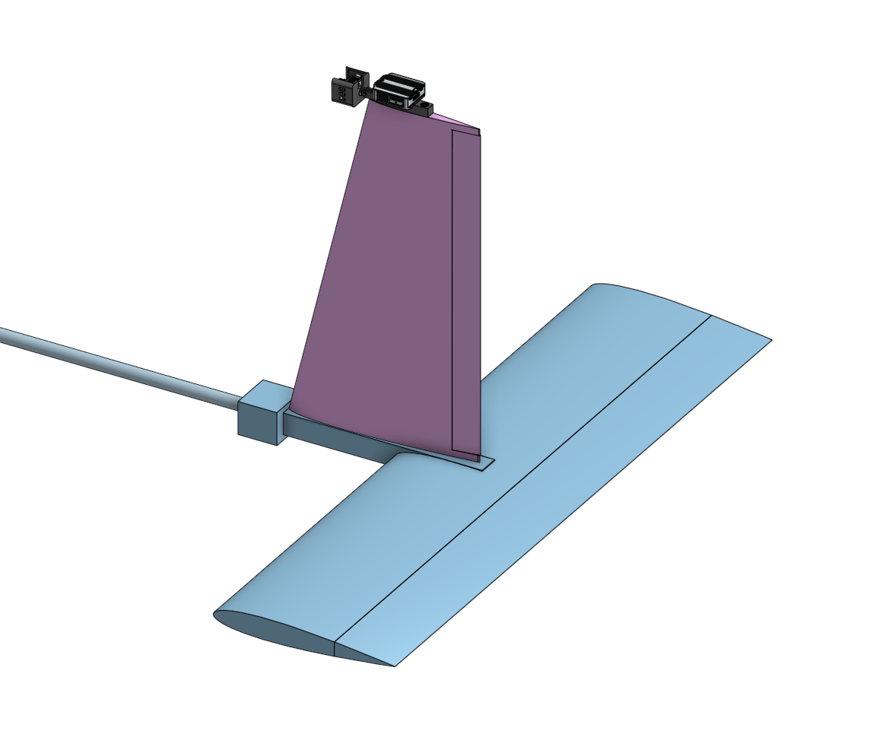
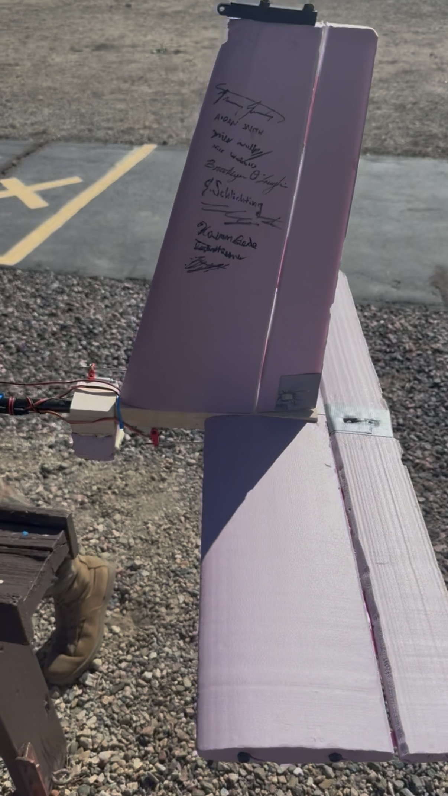
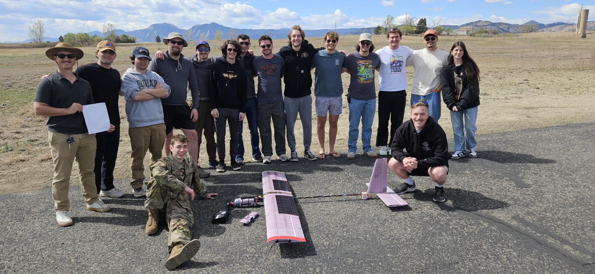

Morphing Trailing Edge demonstrator
A sub scale RC aircraft built to prove a morphing trailing edge works as a high lift device, part of a clean sheet transport concept targeting 50% better fuel efficiency than the 737 MAX 8.
My role
I was responsible for the complete tail system, from sizing, stability analysis, CAD and hand fabrication of the entire empennage.
- Wingspan
- 2.15 m
- Mass
- 4.1 kg
- Aspect ratio
- 6.82
- Stall speed
- 9.8 m/s
- Static margin
- ~18%
- Successful flights
- 3

Key takeaways
- Designed for a safe first flight. Sized the vertical tail to favor a correctable spiral over Dutch roll, and accepted ~18% static margin over the 15% target.
- Built every part of the tail myself, from CNC cut NACA 0012 foam surfaces to a basswood and carbon fiber empennage box.
- Three successful flights, ending with the first in flight MTE deflection. The test pilot called it the best handling senior project airplane he’d flown.
- MTE validated in the wind wall: over 100% CL increase at 0° AoA.
Engineering deep dive
What I did
- Sized both stabilizers with volume coefficients: VH = 0.685, VV = 0.0403
- Set CG at 0.43 m against a neutral point at 0.487 m over a 0.315 m MAC
- Fabricated NACA 0012 surfaces on a 4-axis CNC foam cutter
- Built the basswood and carbon fiber empennage box by hand
The call I made
I designed the tail to favor spiral instability over Dutch roll. A spiral is a slow, tightening descending turn, and a pilot can fix it with basic stick input. Dutch roll is an out of phase yaw and roll oscillation, and it's much harder to recover from. To get there, I sized the vertical stabilizer toward the upper end of the recommended range, since more vertical tail area strengthens directional stability and pushes the aircraft toward spiral.
Result
- Three successful flights, ending with the first in-flight MTE deflection
- Wind tunnel: over 100% CL increase at 0° AoA, neutral to 30° MTE
- Over 30% CL increase at 5° AoA, significant across all deflections
Static margin, live
Move the CG and see why I landed at 18%. Neutral point and MAC are the as-built values.
As flown. A little more stable than the 15% target, traded for confidence on a first flight.
Tail sizing vs. recommended range
Light aircraft guidance shaded in blue, my values in orange.
Both tail volumes sit high in their ranges on purpose. VH and VV give strong pitch and yaw authority and extra stability, and high VV pushes the aircraft toward a correctable spiral over Dutch roll. A tip mounted camera requirement, pushed VV higher and put more weight aft, so I used a 0.6 taper ratio on the vertical stabilizer to help reduce weight and induced drag.
Flight log
Each flight expanded the envelope one step.
- Flight 1Success
CU Flight Ops airworthiness check. Stable pattern, trim established.
- Flight 2Success
Test pilot handoff. Roll, pitch, and yaw authority demonstrated, positive static and dynamic stability. Camera mount added to the vertical stabilizer.
- Flight 3SuccessAnomaly logged
First MTE deflection at 20° with GPS telemetry. A torsional aeroelastic event occurred under high speed asymmetric MTE loading.
First takeoff
Flight 1, CU Flight Ops airworthiness check.



Design notes
Every tail decision moves the CG
A bigger horizontal stabilizer buys pitch authority but adds weight far aft, eroding static margin. A bigger vertical guards against Dutch roll at the same penalty. I sized both against light aircraft ranges: VH 0.685 in 0.4–0.8 and VV 0.0403 in 0.02–0.05.
Why 18% and not 15%
Too stable and the aircraft goes sluggish, damping the pitch response we needed to measure MTE effects. Too little and gusts cause outsized pitch reactions on an untested airframe. The extra margin was a deliberate trade.
Airfoil
NACA 0012 on both surfaces, symmetric, so zero pitching moment at zero AoA, and well documented at our low Reynolds numbers.
Structure
Lifting surface spars pass through and intersect the main carbon spar rather than stopping at it, improving load transfer in bending and torsion. The CNC cut spar channels in the same pass as the airfoil, so their locations were exact. Control surfaces hang on continuous living hinges.
A gap I caught in assembly
I hadn’t allocated a servo mount. I added a basswood block forward of the empennage box for a rigid mount with short, direct linkages.
Wind wall validation
Custom load cell stand at Re ≈ 155,000. Over 100% CL increase at 0° AoA from neutral to 30° MTE, and over 30% at 5° AoA, statistically significant across all deflection angles.